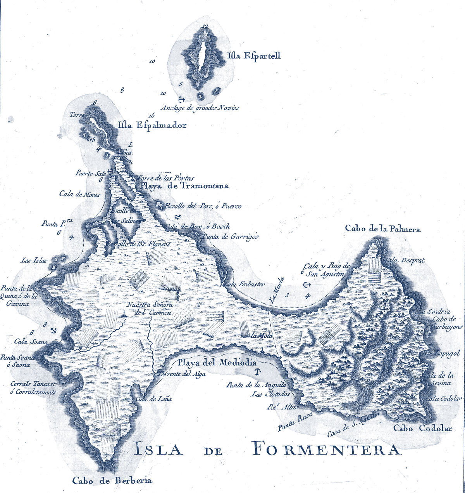
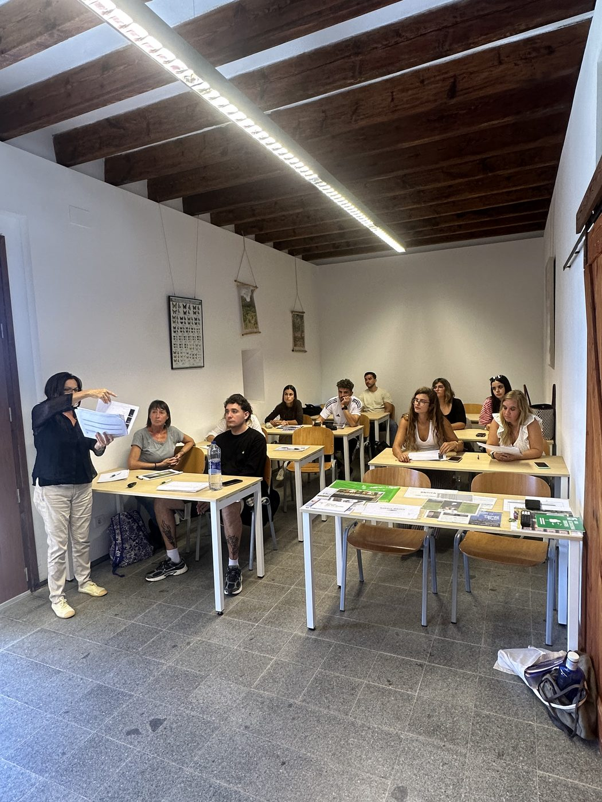
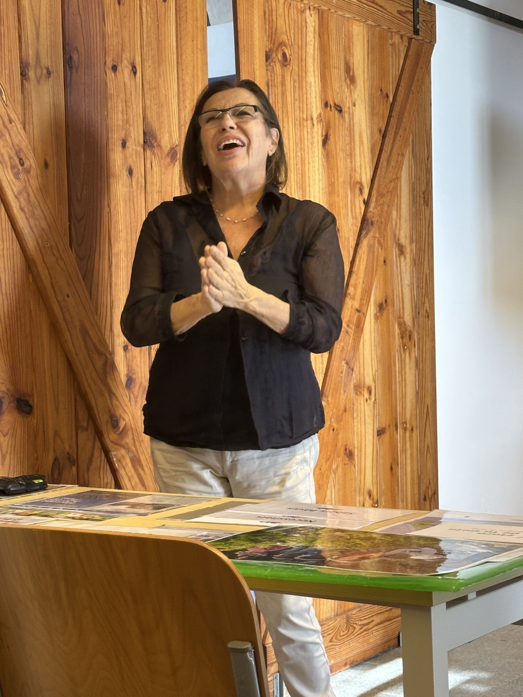
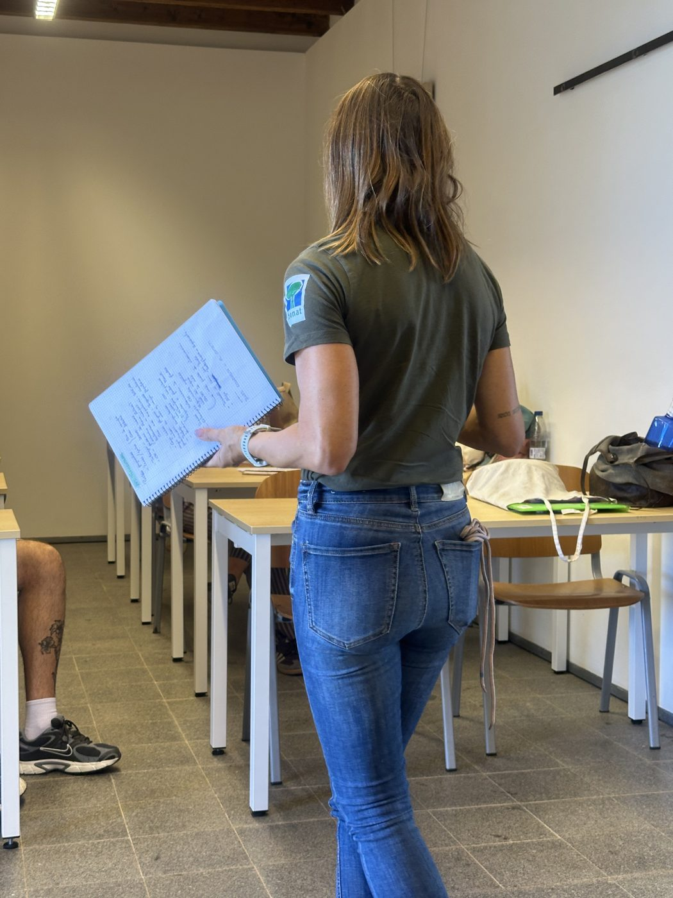
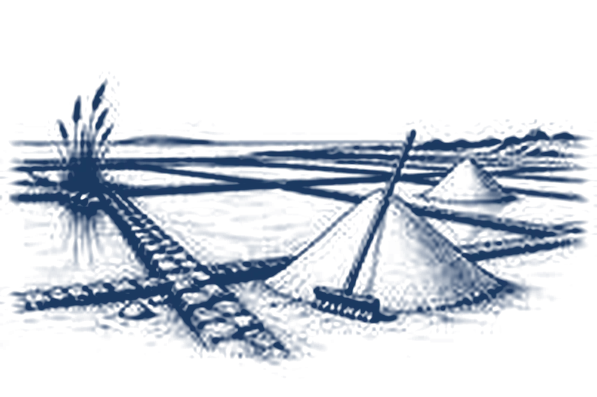
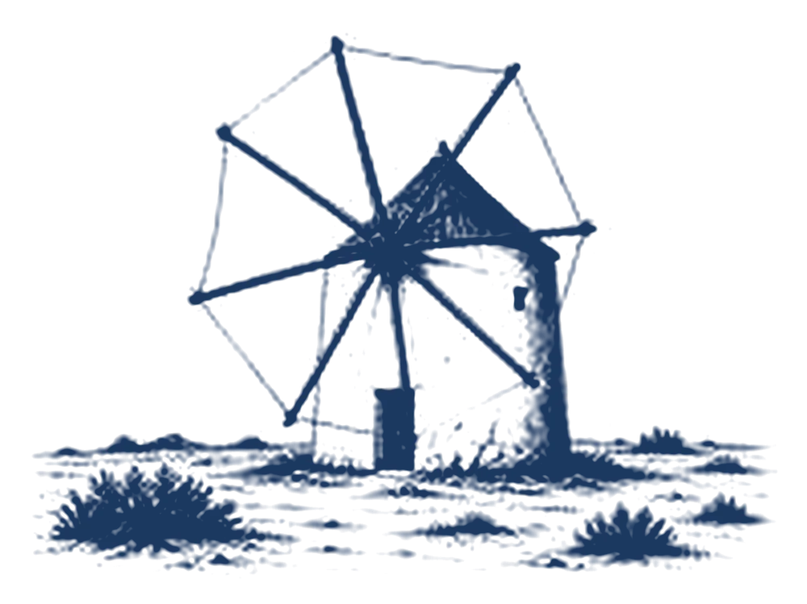

Aprenentatge servei a l’illa de Formentera
Curs 2026-2027
L’alumnat aprèn el que toca del currículum fent una feina que algú de l’illa necessita de veritat.

Què és, en tres idees
Aquest curs hi participen el CEIP Sant Ferran de ses Roques, el CEIP Mestre Lluís Andreu i el Col·legi Virgen Milagrosa, amb el Parc Natural de ses Salines d’Eivissa i Formentera, el Consell de Formentera, el centre de dia i els centres per a majors de l’illa.
El programa en un minut
D’on venim
El curs 2025-2026 va ser la primera edició de l’aprenentatge servei al Parc Natural de ses Salines a Formentera. Hi varen participar prop de 80 alumnes de l’illa.
- CEIP Mestre Lluís AndreuVa estudiar la tortuga mora, una espècie en perill d’extinció, i en va fer materials de divulgació.
- CEIP Sant Ferran de ses RoquesVa treballar la recuperació de l’herba dels trucadors i ho va acabar amb una replantació.
- Cloenda al Cinema de FormenteraEl 17 d’abril, amb alumnes, docents i famílies.
La notícia de la cloenda al web del Servei de Formació Permanent del Professorat
La jornada d’inici
Dilluns 26 d’octubre, al Centre d’Interpretació de Can Marroig, els equips dels tres centres començaren el curs. Presentaren el programa l’equip del CEP i Guillem Mut Salvà, del Servei de Formació Permanent del Professorat. Carme Frau Lladó, geògrafa i formadora en aprenentatge servei, explicà els fonaments i experiències de l’ApS, i l’equip d’educació ambiental del Parc Natural va guiar la visita.
La notícia de la jornada al web del Servei de Formació Permanent del Professorat





Fotografies publicades amb el permís de les persones que hi apareixen.
El que ens emportam
- Primer, la necessitatEl servei i els continguts arriben després. No es forcen al principi del projecte.
- Poques trobades, ben aprofitadesPoques sessions de tots els centres durant el curs, en llocs agradables que no siguin de cap centre.
- Tot el centre a bordLes direccions i les caps d’estudis, dins el projecte des del primer dia.
- Acompanyar és escoltarQui acompanya escolta i conta experiències viscudes, no teoria.
Com es fa un projecte, amb Carme Frau
Aquests són els passos que Carme Frau Lladó va compartir amb els equips a la jornada d’inici. Serveixen de guia, no de recepta: cada centre els adapta al seu grup.
Per començar
- Reconèixer una necessitat de l’entorn.
- Pensar quin servei hi pot donar resposta.
- Cercar entitats amb qui col·laborar.
- Planificar lligant els aprenentatges amb el servei.
Amb l’alumnat
- Reflexionar sobre la necessitat i motivar.
- Acompanyar els aprenentatges.
- Preparar el servei.
- Dur a terme el servei.
Per acabar
- Comunicar el servei i els resultats.
- Celebrar i reconèixer la feina feta.
- Reflexionar sobre el sentit del projecte.
- Avaluar el servei i l’aprenentatge, i proposar millores.
Quin servei pot fer l’alumnat?
- Resoldre problemes ambientals de l’entorn
- Pèrdua de biodiversitat, regeneració de dunes, caixes niu.
- Sensibilitzar
- Campanyes de consum responsable o sobre espècies invasores.
- Millorar el patrimoni natural i cultural
- Reforestacions, restauració d’elements patrimonials, camins ben adequats i senyalitzats.
Al voltant de cada projecte hi ha una xarxa: el centre, les entitats, les famílies, la comunitat educativa, el CEP i les administracions.

El recorregut del curs
Del que ja hem fet al que ve: les reunions per posar en marxa el programa, les visites a cada centre per acompanyar el projecte de prop i les trobades de tots els centres per compartir-lo.
Fet fins ara
JunyFet
El programa surt a la convocatòria
L’ApS a l’illa de Formentera entra a la convocatòria unificada de programes de formació (BOIB núm. 69, de 2 de juny de 2026), amb una instrucció pròpia.
16 de setembreFet
Reunió amb el Servei de Formació Permanent del Professorat
Amb Maria José i Guillem Mut, referents del programa ApS, tancam les convocatòries, les places i el calendari.
18 de setembreFet
Llançament de les formacions
S’obren les inscripcions de la 360 i la 361 al Portal del personal, fins al 30 de setembre. La 363, del Col·legi Virgen Milagrosa, s’obre el 2 d’octubre.
SetembreFet
Visita a Can Marroig
L’equip del CEP visita Can Marroig i parla amb les tècniques d’educació ambiental del Parc Natural per preparar la jornada d’inici i les visites de l’alumnat.
25 de setembreFet
Reunió amb el Consell de Formentera
Amb la consellera d’Educació i Benestar Social acordam que el Consell pagui el transport de l’alumnat al Parc Natural, al centre de dia i als centres de majors.
26 d’octubreFet
Jornada d’inici a Can Marroig
Amb Carme Frau Lladó, el Servei de Formació Permanent del Professorat i l’equip d’educació ambiental del Parc Natural. El Parc demana més implicació dels centres que el curs passat, i les consultes dels centres al Parc passen pel CEP.
16 de novembreFet
Primera visita de seguiment
Al CEIP Mestre Lluís Andreu.
El que ve
Novembre
Visita a la resta de centres
El CEP proposa dates i cada centre tria la que li va millor.
Desembre
Primera trobada de tots els centres, presencial
Les emocions i l’entorn, la necessitat que ha detectat cada centre i les entitats amb què es pot fer feina.
Gener
Visita a cada centre
El servei: què farà l’alumnat i per a qui.
Març
Segona trobada de tots els centres
Posada en comú dels serveis, concreció de la celebració i avaluació del projecte.
Final d’abril
Celebració i difusió
Els centres mostren a l’illa el servei que han fet.
Dates, llocs i horaris es coordinen amb els equips de cada centre i es publiquen aquí a mesura que es concreten.
Les formacions de cada centre
Cada centre té la seva formació, de 30 hores. A la fitxa hi ha els continguts, els objectius i com es certifica.
Idees d’altres projectes
El banc d’experiències del Centre Promotor d’Aprenentatge Servei recull més de 260 projectes fets a escoles, instituts i entitats. Aquests sis s’acosten al que fan els nostres centres: entorn natural, gent gran i patrimoni.
Cerca al banc d’experiències
Font: Banc d’experiències del Centre Promotor d’Aprenentatge Servei, amb llicència CC BY-SA 4.0. Les fitxes s’obren al seu web.
Per llegir abans de començar
La guia breu explica què és l’aprenentatge servei, què no és i com es reconeix un projecte ben fet. El tríptic resumeix el programa d’aquest curs.

Guies del Centre Promotor d’Aprenentatge Servei
- Com fer ApS als centres educatiusJosep Maria Puig Rovira. Els deu passos bàsics per començar un projecte.
- Aprenentatge servei i gent granAnna Ramis. Les persones grans com a destinatàries i com a protagonistes del servei.
- Avaluació dels aprenentatges en els projectes d’ApSRoser Batlle (coord.). Recull pràctic de recursos per avaluar. Una de les guies que recomana Carme Frau.
- Mapa de valors de l’ApSXus Martín, Josep Maria Puig i altres. Quins valors s’eduquen i en quin moment.
- Totes les guies i rúbriquesGuies generals, temàtiques i metodològiques al web del Centre Promotor.
Programa d’experiència formativa del CEP de Formentera amb el Servei de Formació Permanent del Professorat. Línia estratègica 8, Entorn i sostenibilitat, del Pla quadriennal de formació permanent del professorat 2024-2028 (BOIB núm. 119, de 10/09/2024). Informació: cep@cepformentera.cat.